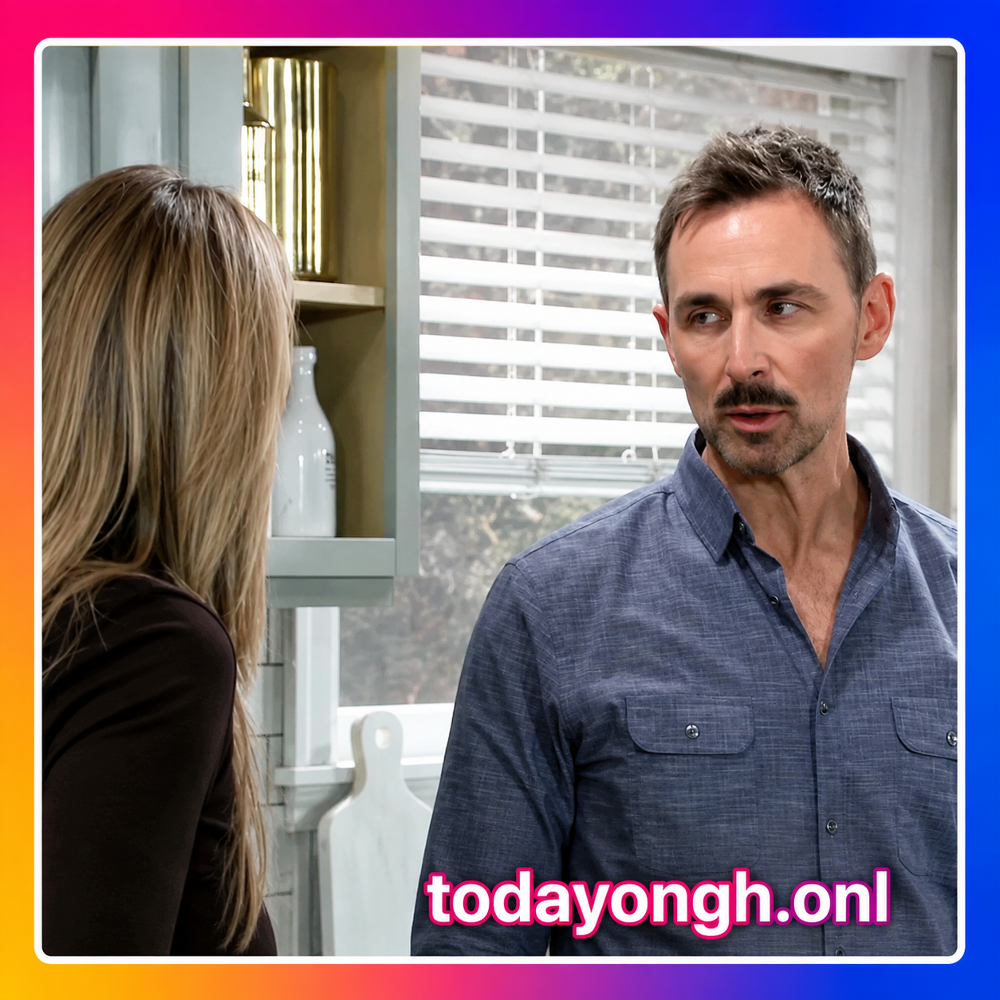
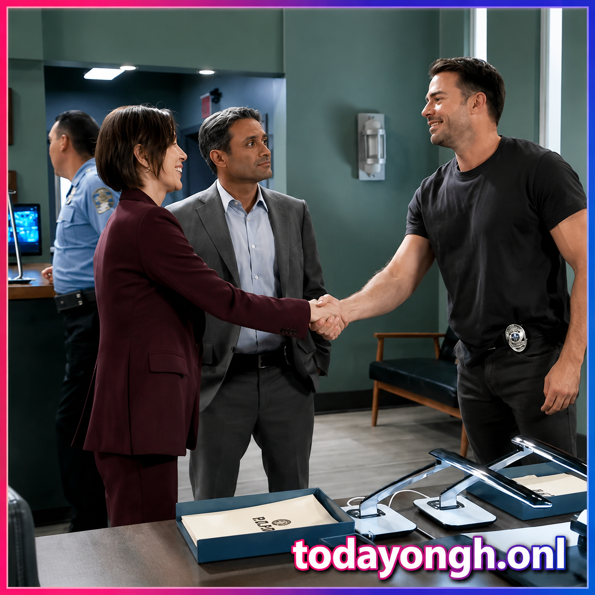
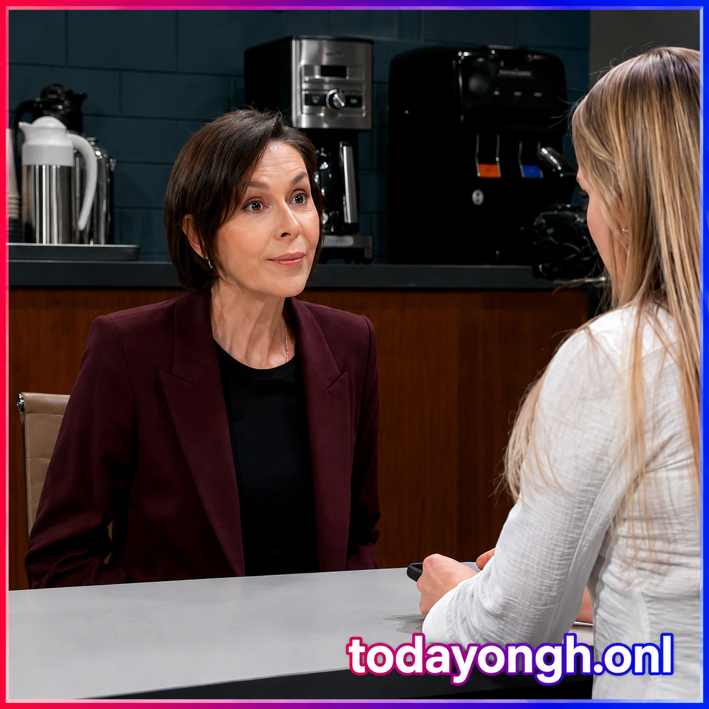

General Hospital Spoilers for Wednesday, July 22, 2026: Carly Fears Brennan's Next Move, Valentin Makes a Risky Deal, and Anna Uncovers New Clues

Wednesday's General Hospital spoilers promise another emotional and suspense-filled episode as Carly Spencer begins to fear the true cost of the mysterious black box. Valentin Cassadine insists he has a strategy to stay one step ahead of Jack Brennan, while Anna Devane stumbles onto information that could change the investigation into Ross Cullum's shooting. Meanwhile, Curtis hopes for a fresh start with Portia, and Lulu faces a heartbreaking decision about Charlotte.
Carly Worries Brennan Could Turn on Valentin
Carly Spencer is becoming increasingly uneasy about the dangerous game surrounding the black box. Although Valentin believes he has planned every possible outcome, Carly isn't convinced Brennan will honor any agreement.

She questions what would stop Brennan from eliminating Valentin the moment he gets what he wants. Rather than panic, Valentin promises he has already thought several steps ahead. His strategy may not only keep him alive but could also give Carly the chance to finally settle old scores.
Anna Questions Brennan After a Shocking Revelation
At the PCPD, Anna Devane is left stunned when Jack Brennan confidently claims that Cassius Faison was not the person who shot Ross Cullum.

His certainty immediately raises red flags for Anna. She presses Brennan for answers and wonders how he knows so much about the shooting. Brennan may reveal information connected to Danny Morgan and Rocco Falconeri, but he also warns Anna that continuing the investigation could have dangerous consequences.
The missing evidence surrounding the Cullum case already has Anna suspicious, and Brennan's comments only deepen the mystery.
Curtis Wants to Spend the Night With Portia and Their Baby
Curtis Ashford arrives at General Hospital with one heartfelt request. As Portia Robinson prepares to take their newborn son home, Curtis hopes he can stay with them for the baby's very first night.
Instead of giving an immediate answer, Portia surprises Curtis with an unexpected response. Whether this marks the beginning of healing or creates fresh complications remains to be seen, but emotions will be running high as they try to rebuild their family.
Lulu Faces a Painful Choice About Charlotte
Lulu Spencer finally admits to Dante Falconeri that she knows what she has to do, but carrying it out won't be easy.

Charlotte's growing desire to live with Valentin has forced Lulu into an impossible position. She realizes that making peace with Valentin could be the only way to improve Charlotte's emotional well-being, even if it means putting aside her own feelings. Dante listens as Lulu struggles with one of the toughest parenting decisions she has faced.
Michael Offers Jordan Unexpected Help While Britt Faces New Trouble
Michael Corinthos checks in with Jordan Ashford and wonders whether she regrets refusing Jenz Sidwell's offer involving the specialized German clinic.
Having previously received treatment there himself, Michael may use his own connections to help Jordan if she changes her mind. At the same time, Britt Westbourne continues adjusting to life back at General Hospital after her conditional reinstatement. Although she's back at work, new responsibilities and hospital drama ensure her fresh start won't be easy.
Wednesday's episode sets the stage for bigger conflicts as Brennan, Valentin, Carly, and Anna move closer to a dangerous showdown.
Final Thoughts
Wednesday's episode is shaping up to be one of the week's biggest turning points. Carly's fears about Brennan continue to grow, Valentin prepares to gamble everything on a dangerous plan, and Anna moves closer to uncovering the truth behind the Cullum shooting. At the same time, Lulu faces an emotional choice involving Charlotte, while Curtis, Portia, Michael, and Britt all deal with life-changing moments of their own.
As these storylines collide, the fallout could reshape several relationships across Port Charles. Stay tuned because General Hospital spoilers suggest even bigger twists and shocking revelations are just around the corner.